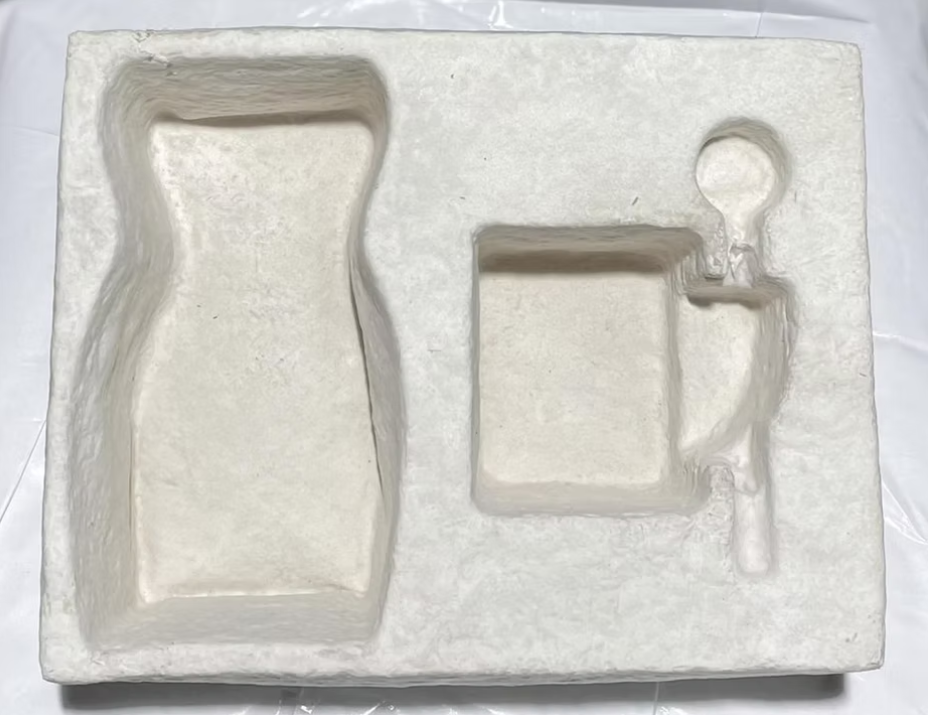

Our Product: Mycelium-Based Packaging
Our innovative packaging solution is created using agricultural waste and mushroom mycelium, providing a sustainable and effective alternative to Thermocol (EPS).
How It Works
- Paddy field leftovers are treated with engineered mushroom strains.
- Mycelium spreads across the material, forming a dough-like texture.
- The structure is shaped into molds of desired forms.
- It is stored for 4 days to solidify the mycelium.
- The product is baked to kill the mycelium and create the final form.
Key Features
- Biodegradable in 30–60 days (vs. Thermocol’s 2000 years)
- Eco-friendly & compostable
- Lightweight yet strong
- Shock-absorbent (ideal for cushioning)
- Reduces packaging box size by 15–20%
Comparison with Thermocol
While Thermocol is cheap and widely used, it is non-biodegradable and harmful to the environment. Our product offers a responsible, compostable solution with additional functional benefits.
Target Industries
- Cosmetics – Sustainable, luxury branding
- Consumer Electronics – Protective cushioning
- Foodware – Biodegradable cups and plates
- FMCD – Lightweight, eco packaging
- Export – Global compliance with eco-standards